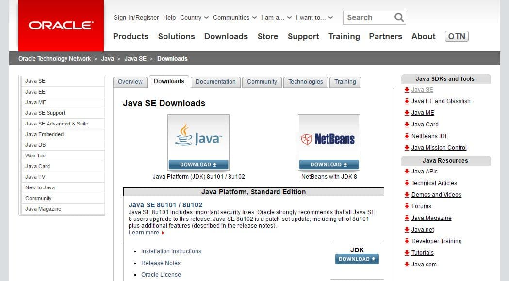
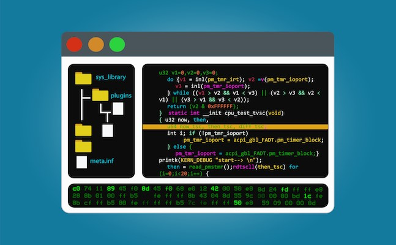

環境構築
JDKインストール
JDKは「Java SE Development Kit」の略で、Javaでプログラムを作成する際に必要な開発キットです。

まずはJDKを自分のPCにインストールしましょう。
インストール手順については下記サイトを参考に進めてみてください。
・ご利用のOSがWindowsの場合
・ご利用のOSがMacの場合
※Windowsの場合は「環境変数の設定」という作業が別途必要になります
eclipseインストール
eclipseとはIDE（統合開発環境）というツールに分類されます。
IDEとは簡単にお伝えすると、高機能のテキストエディタです。

Javaの開発現場ではeclipseを使用することが一般的なので、使い方を課題の中で覚えてしまいましょう。
インストール手順については下記サイトを参考に進めてみてください。
・ご利用のOSがWindowsの場合
・ご利用のOSがMacの場合